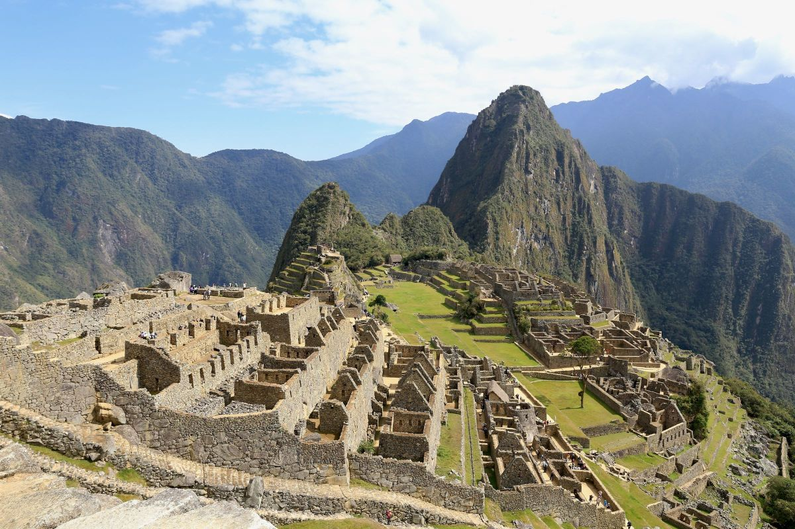
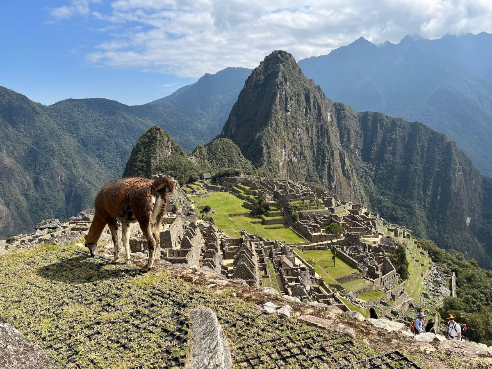

Machu Picchu é um sítio arqueológico localizado no Peru, reconhecido como uma das maravilhas do mundo moderno! O lugar é impressionante sob inúmeros aspectos e merece entrar na sua lista de destinos para ser desbravado ao menos uma vez na vida! Exalando uma energia incrível, é um museu ao ar livre e uma verdadeira aula de conhecimento!
O que é Machu Picchu
A “cidade perdida dos Incas”, ou Machu Picchu, que significa "velha montanha" em quéchua, língua nativa, foi uma das cidades do chamado "Império Inca". O lugar ainda tem boa parte de suas construções originais e permite aos visitantes desvendar um pouquinho de um povo que guardava um conhecimento muito avançado, especialmente para a época em que lá viveram. O sítio arqueológico está 2.450 metros acima do nível do mar, em uma localização que desperta interesse justamente por ser de difícil acesso.
Machu Picchu foi toda construída por blocos de pedras encaixadas, sendo que a maior parte delas tem entre 10 kg e 15 kg — mas algumas chegam a pesar 20 toneladas. O lugar tem cerca de 32 mil hectares e reúne em torno de 200 estruturas em pedra granítica, que incluem terraços agrícolas, templos, residências, paredes enormes e canais de irrigação.
As famílias que lá viviam tinham um conhecimento muito aprofundado sobre agricultura, astronomia, matemática e acústica. É fantástica a experiência de visitar as ruínas e perceber o encaixe perfeito das paredes construídas centenas de anos atrás. É quase impossível não se questionar como esse lugar tão cheio de estrutura, em um lugar tão exótico pode ter existido e sido construído de forma tão grandiosa, que até os dias atuais segue de pé!
Andar por Machu Picchu é conhecer a história, o modo de vida e se surpreender com o conhecimento admirável que incas possuíam. Um passeio imperdível, com diversos segredos!
História de Machu Picchu
Machu Picchu foi uma das cidades do "Império Inca", cuja capital foi Cusco, e acredita-se que tenha sido povoada entre os anos de 1450 a 1540. A cidadela aparentemente abrigava entre 500 e 750 pessoas e é a prova viva da engenhosidade dessa civilização. Muitas informações que temos hoje são, na verdade, teorias, porque não se tem comprovação de todas as informações a respeito dessa civilização, já que os incas não tinham uma linguagem escrita.
O espaço teve como escolha um lugar de extraordinária localização, no alto de uma montanha, em uma zona de difícil acesso, cercado pela mata tropical peruana e por outras enormes montanhas. O hoje sítio arqueológico, considerado Patrimônio Natural e Cultural da Humanidade pela Unesco desde 1983, ficou esquecido e escondido por dezenas de anos, até a chegada de Hiram Birgham, que tornou o local público a nível mundial em 1911. Depois da chegada de Birgham, Machu Picchu ganhou notoriedade, foi alvo de pesquisas, manutenções e estudos arqueológicos para entender melhor sobre a cultura inca e seu surpreendente legado.
Onde ficar em Machu Picchu
Machu Picchu é um sítio arqueológico localizado no alto de uma montanha, em uma área de difícil acesso. Como Cusco está a cerca de 4 horas de viagem, muitas pessoas optam por ficar hospedadas em Machupicchu Pueblo, o vilarejo mais próximo do sítio arqueológico. Por lá, você encontrará diferentes hotéis, com diversos níveis de conforto — Leia sobre onde ficar em Machu Picchu.
A lista a seguir apresenta ótimas opções de hotéis em Machu Picchu. As acomodações estão em ordem alfabética e foram escolhidas pela nossa equipe, priorizando qualidade, preço das diárias e localização. Também incluímos as notas do Booking.com, que indicam a avaliação que hóspedes reais tiveram da acomodação.
| HOTEL | NOTA | LINK |
|---|---|---|
| Inkaterra Machu Picchu Pueblo Hotel | 8.7 | Ver preços |
| Picos House | 8.7 | Ver preços |
| Amakonkay Machupicchu | 8.7 | Ver preços |
| Machu Picchu Land | 8.6 | Ver preços |
| Supertramp Hostel Machupicchu | 8.4 | Ver preços |
| Samananchis Machupicchu | 8.3 | Ver preços |
| Golden Sunrise Machupicchu | 8.2 | Ver preços |
| Hotel Ferré Machu Picchu | 8.2 | Ver preços |
| Mapi Gardens Machupicchu B&B | 8.1 | Ver preços |
| Hotel Machupicchu Inn | 7.6 | Ver preços |
Como Chegar a Machu Picchu
O sítio arqueológico de Machu Picchu está localizado no povoado peruano de Machu Picchu Pueblo, que faz parte da Região de Cusco, nome também da cidade-capital dessa região peruana e que possui em torno de 5 mil habitantes. O aeroporto mais próximo de Machu Picchu é o Aeroporto de Cusco, a cerca de 80 km de distância, em um percurso que dura em torno de 4 horas.